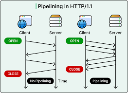

Hypertext Transfer Protocol (HTTP)
HTTP is the protocol used by web browsers and web servers to communicate on the Web.
| Part | Meaning | Example |
|---|---|---|
| Method | Action requested | GET, POST |
| Status code | Server result | 200, 404, 500 |
Key idea: HTTP carries web requests and responses between browsers and servers.

HTTP vs HTTPS
HTTPS (HTTP Secure) is the encrypted version of HTTP. It uses TLS (Transport Layer Security) to encrypt the data in transit, protecting it from eavesdropping and tampering. Websites that handle sensitive data (logins, payments) must use HTTPS. Modern browsers flag HTTP-only sites as "Not Secure."
HTTP Port
Port 80 — default for unencrypted HTTP traffic.
HTTPS Port
Port 443 — encrypted with TLS/SSL.
Current Version
HTTP/3, which uses the QUIC transport protocol for faster performance.
Designed By
Tim Berners-Lee (1989–1991) at CERN.
HTTP Methods
HTTP defines a set of request methods (also called verbs) that indicate the desired action to perform on a resource:
Common HTTP Methods
- GET — Retrieves data from the server (e.g., loading a web page). No side effects.
- POST — Sends data to the server to create a new resource (e.g., submitting a form).
- PUT — Replaces an existing resource entirely with new data.
- PATCH — Partially updates an existing resource.
- DELETE — Removes the specified resource from the server.
- HEAD — Same as GET but returns only response headers, not the body.
- OPTIONS — Describes the communication options available for the target resource.
HTTP Status Codes
Every HTTP response includes a status code indicating the result of the request:
1xx — Informational
Request received, processing continues (e.g., 100 Continue).
2xx — Success
Request successfully processed (e.g., 200 OK, 201 Created).
3xx — Redirection
Further action needed (e.g., 301 Moved Permanently, 304 Not Modified).
4xx — Client Error
Bad request from client (e.g., 404 Not Found, 403 Forbidden, 401 Unauthorized).
5xx — Server Error
Server failed to fulfil a valid request (e.g., 500 Internal Server Error, 503 Service Unavailable).
Evolution
HTTP/1.1 → HTTP/2 (multiplexing, header compression) → HTTP/3 (QUIC protocol, faster handshakes).